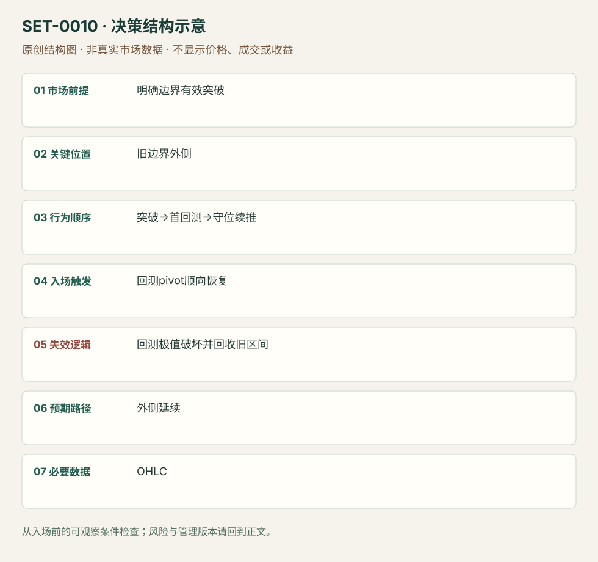

突破后首次回测守住旧边界
Breakout Pullback / Break and Retest · SET-0010 · reviewed · v1.0.0
盈利证据：not_established。审查范围与来源版本见第13节；未知字段保留缺失原因。
1. 名称与快速概览
旧边界被突破后，等待第一次回测证明外侧能够承接，再通过回测摆动的顺向恢复加入。重新接受到旧区间内部会否定本次回测延续。
记录口径：PA core；必要数据 OHLC、volume_optional。名称性质：编辑性描述名，英文保留来源术语以便检索。reviewed 只表示本条规则与证据记录审查通过，盈利状态为 not_established。
2. 本质与行为假说
可见的变化是边界另一侧的成交与价格承接。“阻力转支撑”是对结果的描述，不是提前保证。
3. 适用市场与环境
先有明确且反复测试的边界、有效突破及尚未延伸过远的回测。旧区间仍占主导或突破已经数轮拉锯时，首回测资格消失。
来源实用市场：GM美股1分钟、Brooks日内图例。
Session：美股/ES现金参考段 09:30–16:00 America/New_York；收盘前平仓。期货夜盘单独建背景，不将其并入开盘区间。
跨市场：本版不主张已经验证的跨市场迁移；更换市场必须重定数据来源、流动性与session。
4. 出现前的观察清单
必要：水平下单前确定、突破发生、首次回测可辨。增强：量增、外侧实体不重叠旧边界。否决：将当天后来形成的高点倒用为水平，远离结构追价。
5. 形成过程与状态转换
旧边界测试→越界→第一次退回边界附近→外侧承接→新pivot顺向越过→管理；跌回旧区间并建立新重叠则取消。
6. Entry trigger 与执行方式
SAI版本可在突破时或回测守住时执行，本条只计后者；等新pivot及恢复成交。Brooks允许回测略穿边界而实体缺口仍在，与一tick严格守位是不同版本。
7. Invalidation 与止损逻辑
回测摆动极值破坏是结构失效；SAI以最近pivot收盘破坏为一版，距离太远才讨论VWAP替代。替代止损属于另一次风险设计，不能套用同一结果。
8. Exit、target 与 trade management
先看突破前可知的下一阻力或等幅路径；SAI例在续推失去动量或延伸数柱时部分退出。出现回到旧平衡的行为时结束延续。
9. 常见 variations
Break-and-retest、BO test、双底回测合并；低量回测可增强，但不要求两段或固定量阈值。只靠换参考线不另建条目。
10. 失败方式与不交易条件
正常亏损：首回测看似守住却再入旧区间。未成立：旧水平只测试一次且缺乏背景。偏离：把直接突破买入写成回测买入。成交缺口与图上实体缺口需区分。
11. 与相近 setups 的区别
12. 图表与案例解读
已查看SAI页26的GM图及Brooks BO-test图。GM右图蓝箭头在突破后的回测附近，后续橙箭头是管理示意；日期和时区不够清楚。Brooks图中有略穿边界两tick却保留实体缺口的双底，说明严格价格触碰规则与结构规则不能互相替换。
- [VIS-000010] 来源PDF第26页图表；定位：PDF页序 26。GM突破后首回测；箭头只展示作者案例。 验证：chart_viewed_pdf_page。
- [VIS-000011] Magnets: Breakout test - Double bottom；定位：Magnets / BT-BL。双底回测略穿突破价格，但实体缺口仍可辨。 验证：chart_viewed。

本地原创示意（VIS-000067，非真实市场数据）：

小屏阅读可打开原尺寸示意图并缩放。

此图用于对照识别顺序与风险定义；不计入真实案例覆盖率。
视觉材料元数据与查看范围
- VIS-000010 · real_source_chart / structure_and_trigger / chart_viewed_pdf_page
品种：GM；日期：未知/不适用；周期：1分钟；时区：未知/不适用
日期未在画面中核对；时区未在画面中核对；作者示例；不是独立成交审计 - VIS-000011 · real_source_chart / structure_and_trigger / chart_viewed
品种：未知/不适用；日期：未知/不适用；周期：未知/不适用；时区：未知/不适用
品种未在图中核对；日期未在图中核对；周期未在图中核对；时区未在图中核对；来源图表不是成交审计 - VIS-000067 · synthetic_structure_diagram / illustration_only / generated_not_market_evidence
品种：未知/不适用；日期：未知/不适用；周期：未知/不适用；时区：未知/不适用
无真实品种、日期或价格：这是结构示意
13. 证据、分歧与未知项
两个家族解释同一边界承接过程；具体收盘止损和略穿边界规则不同。未复现样本与收益。
14. 可用于复盘的检查表
- ☐ 下单前的前提可核对：明确边界有效突破
- ☐ 事前标记位置：旧边界外侧
- ☐ 行为按顺序出现：突破→首回测→守位续推
- ☐ 实际触发符合选定版本：回测pivot顺向恢复
- ☐ 事先写明本次否定条件：回测极值破坏并回收旧区间
- ☐ 目标/路径只用当时已知信息：外侧延续
- ☐ 数据满足 OHLC；记录时间、点差、滑点、队列和未成交
- ☐ 记录截止平仓及规则偏离；正常亏损不事后改成“未成立”
15. 后续验证问题
记录最初水平画法及回测容忍度，比较收盘守位与实体缺口版本；计入回测未成交。
双向相关导航
- SET-0004 显著成交重心跌破后的回测延续 普通突破回测只需价格边界；本条还需事先可识别的成交重心和高价接受不足。
- SET-0013 趋势内双内包压缩首次释放 II在压缩释放时入，本条释放已发生且等待回测。
- SET-0016 反复逼近固定边界的压力突破 回测突破需要越界已经发生；本条在第一次有效越界之前建立压力假说。
- SET-0035 IB 首侧失败后的反侧突破与回收 0010 只要求一个既有边界的首次回测；本条额外必需双侧拍卖失败序列。